Welcome to the platform's documentation! This guide will help you navigate through the process of creating, configuring, and optimizing your 3D models using our advanced tools. Whether you're a new user or an experienced engineer, this documentation aims to provide comprehensive instructions and insights to ensure a smooth and efficient workflow.
Overview
Our platform empowers users to generate 3D models that include optimized regions with a periodic structure known as Triply Periodic Minimal Surfaces (TPMS). These optimized zones can be tailored to meet various criteria, including:
- Structural Compliance: Enhancing the stiffness of the model.
- Thermal Compliance: Optimizing for thermal properties.
- Thermal Average on a Surface: Managing the average temperature across a surface.
- Thermal Variance on a Surface: Minimizing temperature fluctuations on a surface.
Key Features
The platform is designed with a robust set of features to support your 3D modeling projects:
Project Management
- New Projects: Initiate new projects with customized parameters and objectives.
- Existing Projects: Modify and optimize existing projects with detailed configurations.
Optimization Process
- Problem Definition: Define the problem and objectives for the optimization process.
- Domains: Configure different domains and material properties.
- Boundary Conditions: Set constraints and loads for accurate simulation results.
- Optimization Objective: Set parameters for 3D models, including defining objectives, tolerances, and influential variables.
- Optimization Parameters: Fine-tune the parameters governing the optimization process.
- TPMS: Incorporate TPMS structures into your models for advanced optimization.
- Run the Optimization: Execute the optimization with selected computational resources.
- Results: Analyze the outcomes of the optimization process.
- Send to Manufacturing: Prepare the optimized model for manufacturing with quality assurance and finishing options.
Getting Started
To begin, explore the User Guide, which will take you through each step of the process, from setting up your first project to sending your optimized model for manufacturing. The guide includes:
- Dashboard: Navigate through the main features and functionalities of the platform.
- Project Management: Detailed instructions for managing new and existing projects.
Each section of the guide is designed to be intuitive and user-friendly, providing you with the necessary tools and information to achieve your project goals.
We are committed to helping you maximize the potential of your 3D modeling projects through precise and efficient optimization techniques. Dive in, and let's start creating optimized, high-performance models together!
Overview
The Dashboard is the central hub for users to access their projects, monitor resource usage, and manage their account settings. It provides a comprehensive overview of the user's activity and available resources, ensuring that they can efficiently navigate and utilize the platform's features.
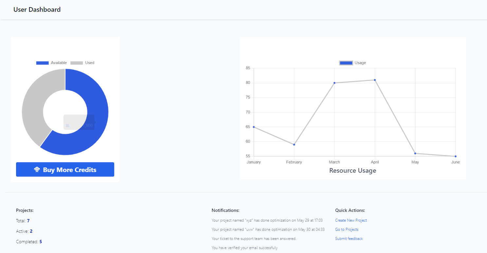Key Elements
Credits Section
-
Pie Chart: The pie chart visually represents the distribution of credits. The blue section indicates the available credits, while the gray section shows the used credits.
-
Buy More Credits: A button below the pie chart allows users to purchase additional credits if needed.

Resource Usage Section
- Line Graph: The line graph displays the resource usage trend over the past few months. Each point on the graph represents the resource consumption for a specific month, helping users identify periods of high or low usage.
Projects Overview Section
-
Total Projects: The total number of projects managed by the user.
-
Active Projects: The number of currently active projects.
-
Completed Projects: The number of projects that have been completed successfully.
Notifications and Quick Actions:
Notifications inform the user about project updates and other important alerts. Quick actions enable users to perform common tasks such as creating a new project, accessing existing projects, and submitting feedback.
-
Create New Project: A link to initiate a new project creation.
-
Go to Projects: A link to access the user's projects.
-
Submit Feedback: A link to provide feedback about the platform.
Project
The Project section allows users to manage their 3D modeling projects efficiently. Here, users can create new projects, configure existing ones, and optimize models using various criteria. The platform supports a range of features to ensure that each project meets specific requirements and optimization goals.
New Projects:
Steps to create a new project.
- Click on the New Projects button on the Projects page.
- Enter a name for the new project, and click continue.
Existing Projects
How to manage and edit existing projects:
- Select any existing project from the Projects page.
Once a new project is created or an existing project is selected, you will have access to the options for configuring and optimizing the project.
Definition

The "Definition" section is a key part of initiating a new project on the platform. This section appears when you choose to upload a new project rather than working on an existing one. It allows you to define the initial parameters and upload the necessary files to start the optimization process.
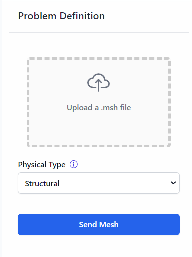Interface Overview
Upload a .msh File
The first step in the "Definition" section is to upload a .msh file. This file contains the mesh data for your project, which is essential for the optimization process.
- Upload a .msh File: Click the upload area to select and upload your .msh file from your local device. Ensure the file is correctly formatted and contains the necessary mesh information for your project.
Physical Type
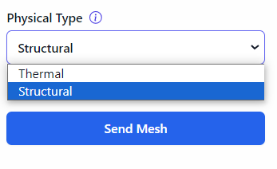After uploading your .msh file, the next step is to select the physical type of your project. This setting determines the nature of the optimization process, tailoring it to the specific requirements of your project.
Physical Type: This is a drop-down menu where you can select the type of physical process you want to optimize. The available options are:
- Thermal: Select this option if your project involves thermal properties and heat management.
- Structural: Select this option if your project involves structural integrity and mechanical properties.
Send Mesh
Click this button to send the uploaded mesh and the selected physical type to the server. This action initiates the processing of your project, preparing it for the optimization phase.
Uploaded File Confirmation
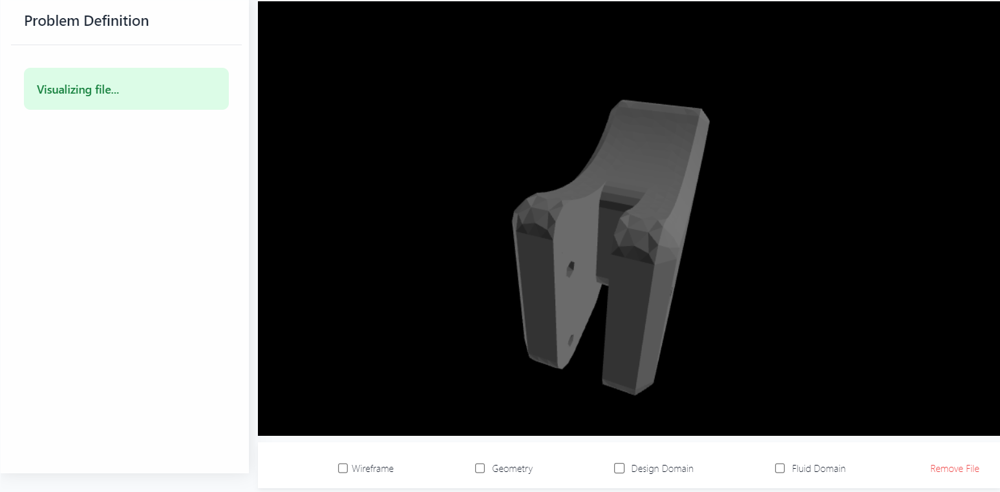After successfully uploading the file, it will be visible in the interface, confirming that the file has been correctly uploaded and is ready for further processing.
3D Model View: This interface displays the uploaded 3D model, allowing you to interact and inspect the model in detail.
View Options

After the file is visible, the platform provides a 3D model view of the uploaded mesh. This section includes several options to customize the view of your 3D model.
-
Wireframe: A checkbox that, when selected, displays the 3D model in a wireframe view, showing the mesh structure.
-
Geometry: A checkbox that, when selected, displays the geometric shape of the 3D model.
-
Design Domain: A checkbox that, when selected, highlights the design domain of the 3D model, indicating the area available for optimization.
-
Fluid Domain: A checkbox that, when selected, shows the fluid domain, relevant for projects involving fluid dynamics.
-
Remove File: A button that, when clicked, removes the uploaded file from the interface, allowing you to upload a new file or make changes to the existing setup.
Domains

The Domains section allows users to define and configure the different material and domain properties for their project. This is a crucial step in setting up the model for optimization and analysis.

Interface Overview
Domain Name
- Select the surface: A dropdown menu to select the surface you want to define as a domain. Each domain corresponds to a specific part of the model.
Material

- Material: A dropdown menu to select the material for the selected domain. Example options include Aluminum, Steel, Titanium, etc.
Hooke Module
- Hooke Module [ ]: The Young's modulus of the material in Pascals (Pa). This is a measure of the stiffness of the material.
Poisson Coefficient

- Poisson Coefficient [ ]: The Poisson's ratio of the material. This is a measure of the deformation of the material in directions perpendicular to the direction of loading.
Density

- Density [ ]: The density of the material in kilograms per cubic meter (kg/m³).
Structural Source Term
- Structural Source Term [N/m^3]: Input fields for the structural source term in Newtons per cubic meter (N/m³) in the X, Y, and Z directions. This is used to define any additional forces acting on the domain.
Options
- Optimize And Generate TPMS: A checkbox to enable optimization and generation of Triply Periodic Minimal Surface (TPMS) structures. TPMS structures are used for lightweight and high-strength design.
- Generate TPMS: A checkbox to generate TPMS without optimization.
Save and Continue
- Save and Continue: Click this button to save the current boundary condition and continue to the next step.
Boundary Conditions
The Boundary Conditions section allows users to define the constraints and loads applied to the model. Properly setting boundary conditions is crucial for accurate simulation and optimization results.
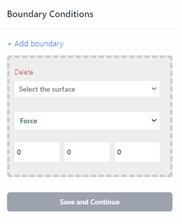Interface Overview
Adding a Boundary Condition

- Add boundary: Click this link to add a new boundary condition.
Boundary Condition Configuration
When adding or editing a boundary condition, the configuration panel will display several options:
Select the Surface

-
Dirichlet_BC: This boundary condition specifies the fixed values for displacement (i.e., constraints). In Dirichlet boundary conditions, the solution to the variable is assumed.
-
Neumann_BC: This boundary condition specifies the values for forces or stresses applied to the model. In Neumann boundary conditions, a solution is assumed for the derivative of the variable.
-
Outer walls: Select this option if the boundary condition applies to the outer walls of the model.
-
Inner walls: Select this option if the boundary condition applies to the inner walls of the model.
Type of Boundary Condition

-
Force: Specifies a force boundary condition. When selected, the user must enter the force components in the X, Y, and Z directions.
-
Displacement: Specifies a displacement boundary condition. When selected, the user must enter the displacement components in the X, Y, and Z directions.
Force/Displacement Components

- X, Y, Z Fields: Enter the components of the force or displacement in the respective fields. These values define how the force or displacement is applied in each direction.
Save and Continue
- Save and Continue: Click this button to save the current boundary condition and continue to the next step.
Optimization Objective

The "Optimization Objective" section allows users to set and configure the parameters for optimizing their 3D models. This includes defining the objective, tolerances, and other variables that influence the optimization process.
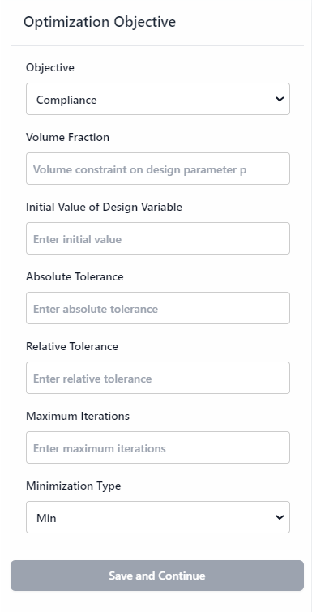Interface Overview
Objective

- Compliance: Minimizes the structural compliance (maximizes stiffness) of the model.
Volume Fraction
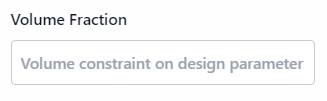Set the volume fraction, which defines the fraction of the design space that will be filled with material. This value is typically between 0 and 1.
Initial Value of Design Variable
Specify the initial value for the design variable, which represents the starting point for the optimization process.
Absolute Tolerance
Enter the absolute tolerance, which defines the acceptable absolute error in the optimization results.
Relative Tolerance
Specify the relative tolerance, which sets the acceptable relative error in the optimization results.
Maximum Iterations

Set the maximum number of iterations allowed for the optimization process. This controls how many times the optimization algorithm will run before stopping.
Minimization Type
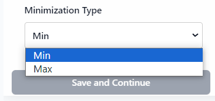Choose the type of minimization for the optimization objective. Available options include:
- Min: Minimizes the chosen objective.
- Max: Maximizes the chosen objective.
Save and Continue
- Save and Continue: Click this button to save the current boundary condition and continue to the next step.
Optimization Parameters
The "Optimization Parameters" section is a crucial part of configuring your 3D modeling project. Here, you can specify detailed settings that will govern how the optimization process is executed. These settings allow you to tailor the optimization to meet your precise needs and constraints, ensuring the final model adheres to your design requirements.
Interface Overview
Filter Radius [m]
The filter radius is a parameter that determines the extent of the filter's influence during the optimization process. This setting is critical as it affects how the filter smooths or sharpens features in your model. By entering the desired filter radius in meters, you ensure that the optimization process will correctly interpret and apply this setting according to the specified unit of measurement.
- Filter Radius [m]: This is a numerical input field where you can enter the filter radius value in meters. Properly setting this value helps in controlling the scale of feature refinement in the model, which can be essential for achieving desired structural properties.
Threshold Steepness
Threshold steepness values play a significant role in defining the sharpness of transitions between different optimization regions within your model. These values are crucial for fine-tuning how gradual or abrupt changes occur between optimized areas. You can specify multiple threshold values to enhance the precision of the optimization process, which can be particularly important for complex designs.
- Threshold 1: A numerical input field for the first threshold value. This value sets the initial steepness parameter.
- Threshold 2: A numerical input field for the second threshold value. This allows for additional control over the steepness and transition of optimization regions.
Adding and Removing Thresholds
In many cases, you might need to adjust the number of thresholds to better control the optimization process. This interface allows you to dynamically add or remove threshold values:
- Adding Thresholds: Click the green "+" button to add a new threshold input field. This is useful when you need more granular control over the transition settings.
- Removing Thresholds: Click the red "-" button next to each threshold input field to remove it. This helps in simplifying the interface when fewer thresholds are needed.
Save and Continue
After configuring the filter radius and threshold steepness values, the next step is to save your settings and proceed with the optimization. The "Save and Continue" button is designed to capture all your configured parameters and move you to the subsequent phase of the process.
TPMS
The TPMS (Triply Periodic Minimal Surfaces) section allows users to configure the properties and parameters for generating TPMS structures within their project. This section includes fields for defining the type of TPMS structure, dimensional parameters, step dimensions, and more. Proper configuration of these parameters is crucial for generating accurate and optimized TPMS structures.
Interface Overview
Type of TPMS Structure
- Enter TPMS structure type: This field specifies the type of TPMS structure to be generated. Common types include Gyroid, Diamond, and Schwarz. Enter the desired TPMS structure type in this field.
Dimensional Parameters
- a1, a2, a3: These fields represent the dimensional parameters for the TPMS structure. These parameters define the periodicity and scaling of the TPMS structure in three orthogonal directions. Enter the values for each dimension accordingly.
Step Dimension
- Enter step dimension: This field specifies the step size for the TPMS structure generation. The step dimension determines the resolution and detail level of the TPMS structure. A smaller step size results in higher resolution and more detail, while a larger step size results in lower resolution and less detail.
Axis Step (Number of Threads)
- Enter number of threads: This field defines the axis step or the number of threads for the TPMS structure. It specifies the frequency of the TPMS surface along a given axis. Enter the desired number of threads in this field.
Max Number of Points
- Enter max number of points: This field specifies the maximum number of points to be used in the TPMS structure. The number of points affects the complexity and computational requirements of the TPMS generation. Enter the maximum number of points that should be used.
Offset at Min and Max Point [m]
- Min, Max: These fields define the offset values at the minimum and maximum points of the TPMS structure in meters. Offsets are used to shift the TPMS structure along a specific axis. Enter the desired offset values for both minimum and maximum points.
Offset Step [m]

- Enter step: This field specifies the step size for the offset in meters. The offset step determines how much the TPMS structure is shifted per step. Enter the desired offset step value.
Consider Boolean Operation
- Positive, Negative: This dropdown menu allows users to select the type of Boolean operation to be applied to the TPMS structure.
- Positive: Selecting "Positive" will keep the regions where the TPMS structure intersects with the existing model, effectively adding the TPMS structure to the model.
- Negative: Selecting "Negative" will subtract the regions where the TPMS structure intersects with the existing model, effectively removing those regions from the model.
Save and Continue
- Save and Continue: Click this button to save the current TPMS configuration and proceed to the next step.
Run the Optimization
The "Run the Optimization" section allows users to configure and initiate the optimization process for their 3D modeling projects. This section includes options for selecting the computational resources and saving the current configuration before running the optimization.
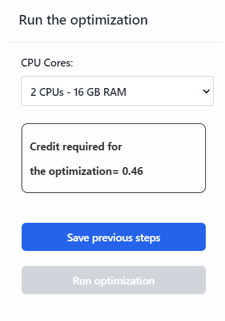Interface Overview
CPU Cores

This dropdown menu allows users to select the number of CPU cores and corresponding RAM to be used for the optimization process. The available options are:
- 2 CPUs - 16 GB RAM: Select this option for a moderate computational load.
- 4 CPUs - 32 GB RAM: Select this option for a higher computational load.
- 8 CPUs - 64 GB RAM: Select this option for an even higher computational load.
- 18 CPUs - 240 GB RAM: Select this option for the maximum computational load.
Choosing a higher number of CPU cores and more RAM will speed up the optimization process but may require more computational resources.
Credit Required for Optimization
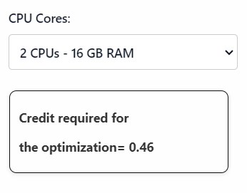- Credit Calculation: This field displays the amount of credit required to run the optimization based on the selected computational resources. The credit requirement will vary depending on the number of CPU cores and RAM selected.
Save Previous Steps & Run Optimization
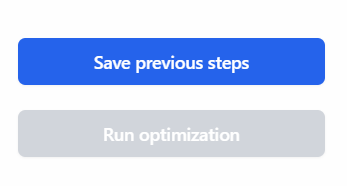-
Save Previous Steps: Click this button to save the current configuration and all previous steps before running the optimization. This ensures that all settings are stored and can be reviewed or modified later if needed.
-
Run Optimization: After saving the previous steps, this button will become active. Click this button to start the optimization process using the selected computational resources. The optimization process will use the saved configuration to optimize the 3D model according to the specified parameters.
Results
This section provides an overview of how to view and interpret the results of your 3D modeling projects on our platform. Once the optimization process is complete, you can access detailed results through the interface.
Viewing Results
To view the results of your project, follow these steps:
Show Results: Click the "Show Results" button on the interface. This will display various charts and graphs that represent the outcome of your optimization process.
The results are displayed in the form of charts, which provide a visual representation of key metrics. The main charts include:
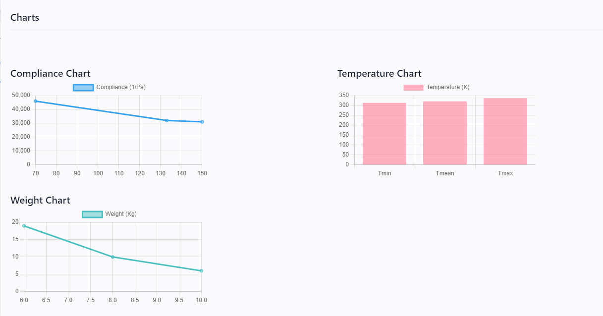-
Compliance Chart: This chart shows the compliance of the model in 1/Pa (inverse Pascals). Compliance is a measure of the flexibility of the structure. Lower compliance values indicate a stiffer structure.
-
Temperature Chart: This chart displays the temperature distribution across the surface of the model. It shows the minimum, mean, and maximum temperatures in Kelvin (K).
-
Weight Chart: This chart presents the weight of the model in kilograms (Kg). It helps in understanding the mass distribution and optimization of the structure.
Downloading Results
For further analysis or record-keeping, you can download the results of your project. Follow these steps:
Download Results: Click the "Download Results" button on the interface. This will initiate the download of a file containing all the detailed results of your project.
The downloaded file includes:
- **Charts Data**: Detailed data points used to generate the compliance, temperature, and weight charts.
- **Optimization Summary**: A summary of the optimization process, including the initial parameters, boundary conditions, and the final optimized values.
- **Configuration Settings**: The settings and configurations used for the optimization, which can be useful for reproducing or modifying the project in the future.
Interpreting the Charts
Understanding the charts is crucial for evaluating the performance and effectiveness of your optimized model. Here are some key points to consider:
- Compliance Chart: Analyze the trend of compliance values. A decreasing trend indicates an increase in the stiffness of the model, which is desirable for structural applications.

- Temperature Chart: Evaluate the temperature distribution to ensure that the model meets the thermal compliance requirements. Look for uniform temperature distribution or specific patterns as per the project's needs.
- Weight Chart: Check the weight reduction achieved through the optimization process. This helps in assessing the material efficiency and overall mass reduction.

The results section provides a comprehensive view of the optimization outcomes, helping you make informed decisions about your 3D model. By effectively interpreting the charts and downloading the detailed results, you can ensure that your model meets the desired criteria for structural and thermal performance.
By following the above guidelines, you can efficiently analyze and utilize the results generated by our platform to enhance your 3D modeling projects.
Send to Manufacturing

The "Send to Manufacturing" section is the final step in preparing your 3D modeling project for production. This section allows you to specify various parameters to ensure that your project meets the required standards and specifications. It includes options for quality assurance measures, finishing processes, quantity, material selection, and certification requirements.
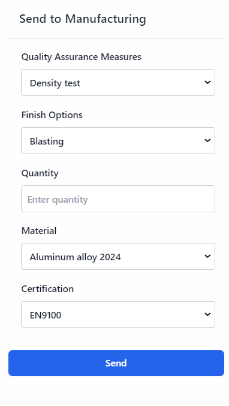Interface Overview
Quality Assurance Measures
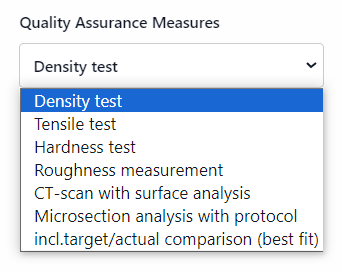Quality assurance is critical in manufacturing to ensure that the produced parts meet the necessary standards and specifications. The available options in this dropdown menu are:
-
Density Test: Measures the density of the material used in the project to ensure it conforms to specified values, which is crucial for applications where material properties like weight and strength are important.
-
Tensile Test: Evaluates the tensile strength of the material, determining the maximum stress the material can withstand while being stretched or pulled before breaking. This is essential for applications where the material will be subjected to tensile forces.
-
Hardness Test: Measures the hardness of the material, indicating its resistance to deformation or scratching. This is important for parts that will experience wear and abrasion.
-
Roughness Measurement: Assesses the surface roughness of the manufactured part, which can affect performance, appearance, and mechanical properties.
-
CT-scan with Surface Analysis: Uses computed tomography (CT) scanning to create a detailed 3D image of the part's internal and external structures. Surface analysis provides information about the part's surface characteristics and any defects.
-
Microsection analysis with protocol: This option involves slicing the material to examine its internal structure under a microscope. It provides details on grain structure and internal defects. Results are documented for quality assurance.
-
incl. target/actual comparison (best fit): This option compares the manufactured part with the design specifications. The "best fit" analysis ensures optimal alignment with the target specifications. It highlights deviations and confirms adherence to design requirements.
Finish Options

Finishing processes improve the appearance, performance, and durability of manufactured parts. The available options in this dropdown menu are:
-
Blasting: Uses a high-pressure stream of abrasive material to clean or finish the surface of the part, removing surface contaminants and providing a uniform finish.
-
Heat Treatment: Involves heating and cooling the material to alter its physical and mechanical properties, improving hardness, strength, and durability.
-
Machining Post Processing: Includes various machining operations such as milling, drilling, and turning to achieve the desired final shape and dimensions, ensuring precision and accuracy in the finished part.
Quantity
Specify the number of units to be manufactured. Enter the desired quantity in the provided field, ensuring it matches your production needs.
Material
Material selection directly affects the performance, durability, and cost of the produced parts. The available options in this dropdown menu are:
-
Aluminum Alloy 2024: Known for its high strength-to-weight ratio, good fatigue resistance, and excellent machinability. Commonly used in aerospace and automotive applications.
-
Tungsten Carbide: A very hard and wear-resistant material used in cutting tools, abrasives, and other applications requiring high hardness and toughness.
-
Titanium Gr.5 3.7164 - Ti6Al4V: A strong and lightweight alloy with excellent corrosion resistance, widely used in aerospace, medical, and marine applications.
-
Inconel (IN718): A nickel-chromium alloy known for its high strength, corrosion resistance, and ability to withstand extreme temperatures. Used in aerospace, chemical processing, and power generation industries.
-
Tool Steel 1.2709: A high-strength steel commonly used for tools, dies, and molds due to its excellent hardness and toughness.
Certification
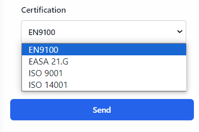Certifications ensure that the manufactured parts meet industry standards and regulatory requirements. The available options in this dropdown menu are:
-
EN9100: A quality management system standard for the aerospace industry, ensuring that the manufactured parts meet the stringent requirements of the aerospace sector.
-
EASA 21.G: A certification for design and production organizations in the aerospace sector, ensuring compliance with the European Aviation Safety Agency (EASA) regulations.
-
ISO 9001: A general quality management system standard that ensures the consistency and quality of products and services across various industries.
-
ISO 14001: An environmental management system standard that helps organizations minimize their environmental impact and improve sustainability.
Sending the Project to Manufacturing
After configuring all the options, submit the project for manufacturing by clicking the "Send" button. Before doing so, Before doing so, review all the selected options to ensure accuracy and completeness.
Final Results
This section is dedicated to showcasing the final results of the 3D models optimized for structural and thermal purposes. Below, you can find the placeholders for inserting images and key metrics related to the optimized models.
Structural Optimization
Model Overview

- Key Metrics:
- Stiffness:
- Weight:
- Load Bearing Capacity:
- Other relevant metrics:
Detailed Analysis
- Analysis Details:
- Stress Distribution:
- Deformation:
- Material Properties:
- Other relevant details:
Thermal Optimization
Model Overview
- Key Metrics:
- Thermal Conductivity:
- Average Surface Temperature:
- Temperature Variance:
- Other relevant metrics:
Detailed Analysis
- Analysis Details:
- Temperature Distribution:
- Heat Flux:
- Material Properties:
- Other relevant details: